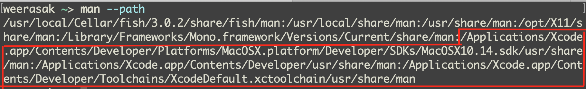

man เป็นคำสั่งเพื่อดู manual คู่มือต่างๆของระบบ Unix หรือระบบแบบ Unix อื่นๆ ไม่ว่าจะ Linux/BSD/macOS ซึ่งเวลาใช้งานก็สั่ง man ตามด้วยชื่อคำสั่งหรือชื่อหัวข้อที่ต้องการดูเช่น
man lsจริงๆแล้วคำสั่ง man จะไปค้นหาไฟล์ที่เป็นคู่มือที่อยู่ใน PATH ที่กำหนดในตัวแปร MANPAH หรืออยู่ในไฟล์ /etc/man.conf ซึ่งเราสามารถใช้คำสั่ง man --path เพื่อดูรายการของ path ที่จะถูกค้นหาได้
จากรูปสิ่งที่วงไว้กรอบสีแดงคือ path ของ man page ต่างๆของ Xcode ปัญหามันอยู่ตรงที่ผมพยายามหา config ที่ระบุ path พวกนี้ไม่เจอเลย เลยสงสัยว่า man มันไปอ่านค่าพวกนี้มาจากไหน
หลังจากค้นหาไปสักพักก็กระจ่างแจ้งเลย เมื่อเจอลิ้งนี้ Man pages on OSX + Xcode Developer tools
นั่นก็คือ APPLE แก้โค้ดของ man ตัวที่ใช้กับ macOS ให้หา path ที่เกี่ยวกับ Xcode เป็น default MANPATH นั่นเอง เล่น patch โค้ดกันแบบนี้เลย แล้วในคู่คือของคำสั่ง man เองก็ดันไม่ยอมแก้เพื่ออธิบายไว้ด้วยนะ
#ifdef __APPLE__
xcselect_manpaths *xcp;
const char *path;
unsigned i, count;
// TODO: pass something for sdkname
xcp = xcselect_get_manpaths(NULL);
if (xcp != NULL) {
count = xcselect_manpaths_get_num_paths(xcp);
for (i = 0; i < count; i++) {
path = xcselect_manpaths_get_path(xcp, i);
if (path != NULL) {
add_to_mandirlist((char *)path, perrs);
}
}
xcselect_manpaths_free(xcp);
}
#endif /* __APPLE__ */